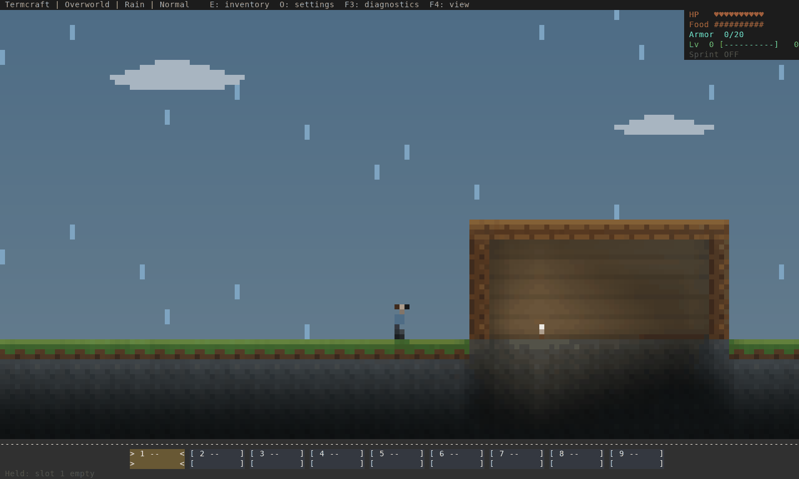
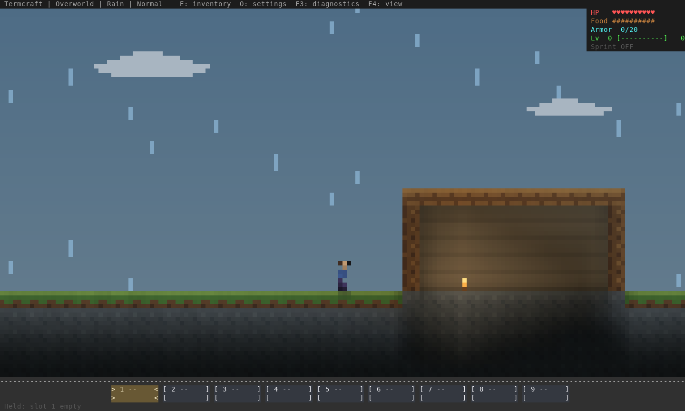
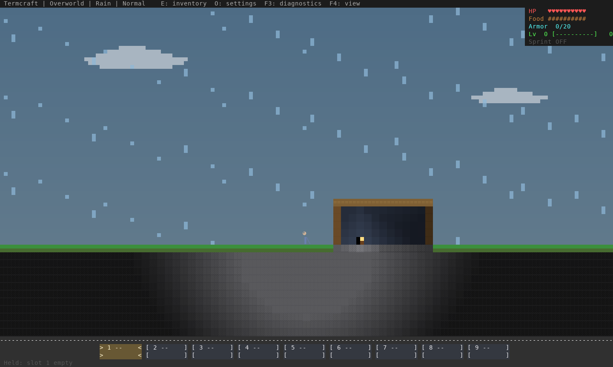
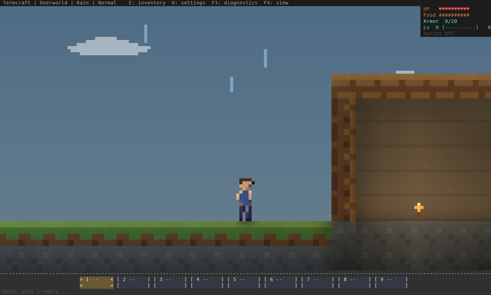
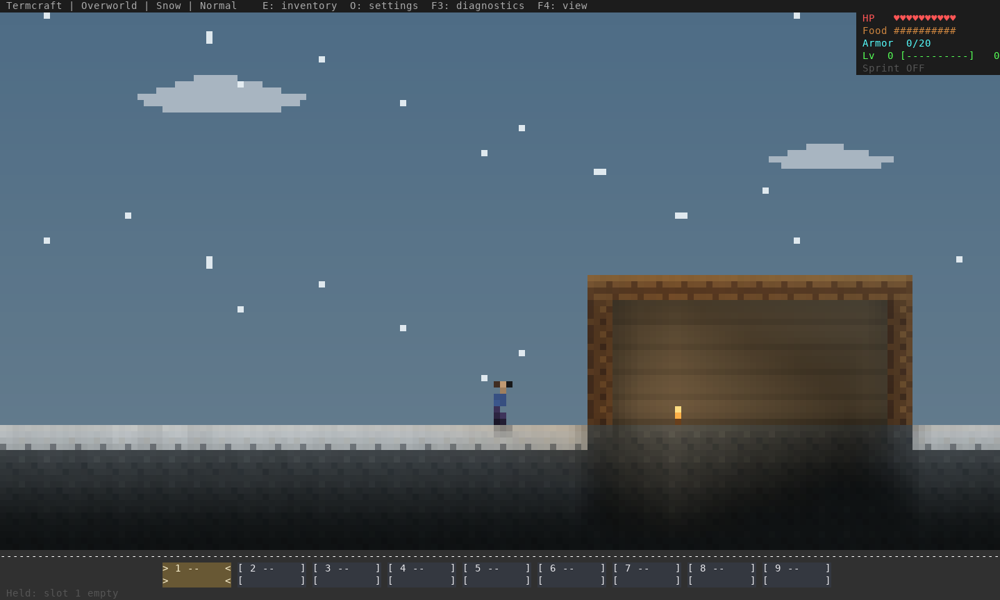
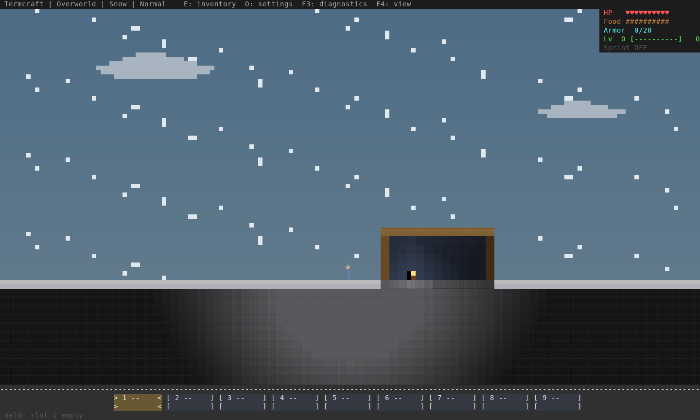
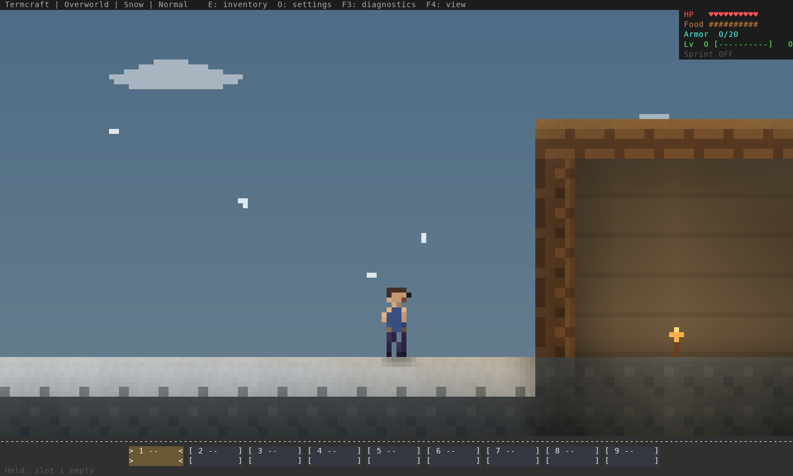

Actual Termcraft renderer output, software rasterized from ANSI. Fixed disposable geometry and weather poses. Rain falls faster than snow; both stop at cover. The character art is unchanged. Native/co-op run+jump checks are recorded in the reproduction and limits.






